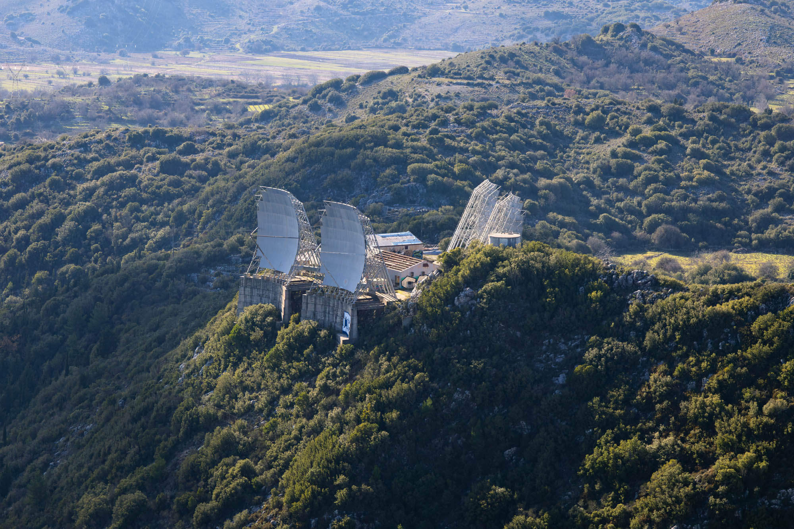
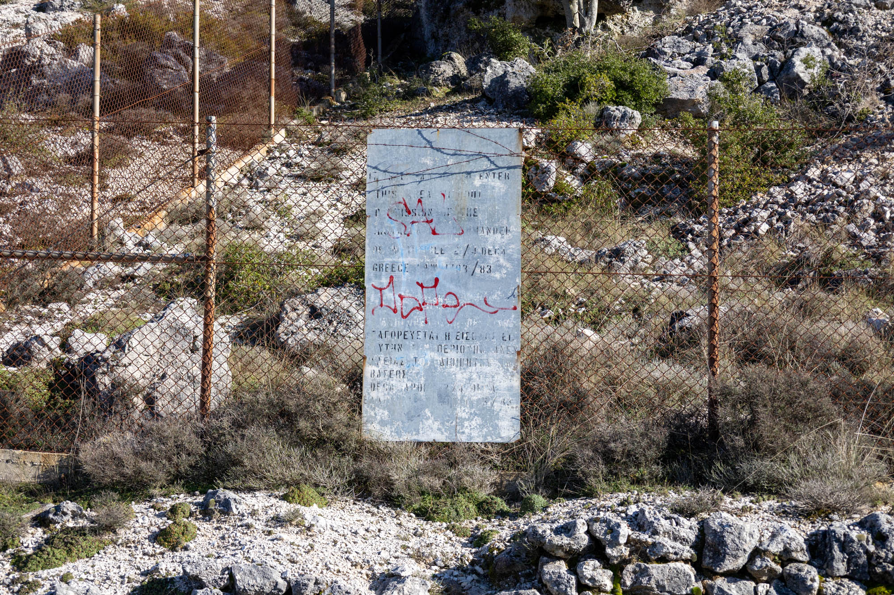
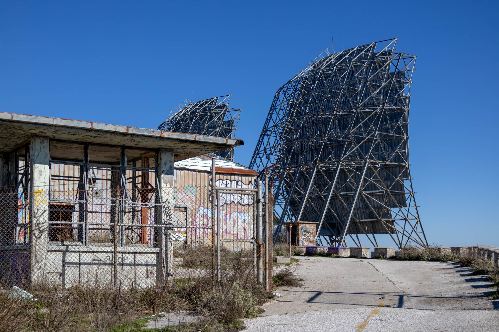
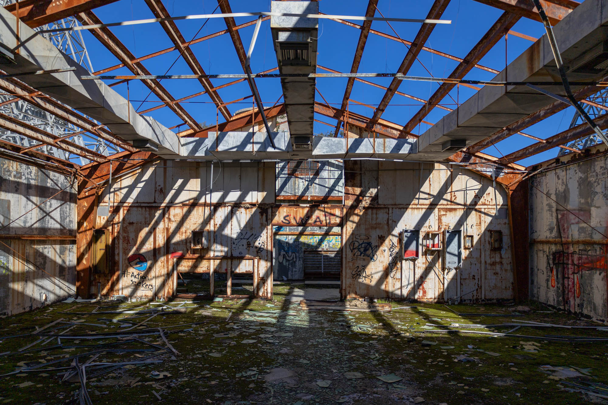
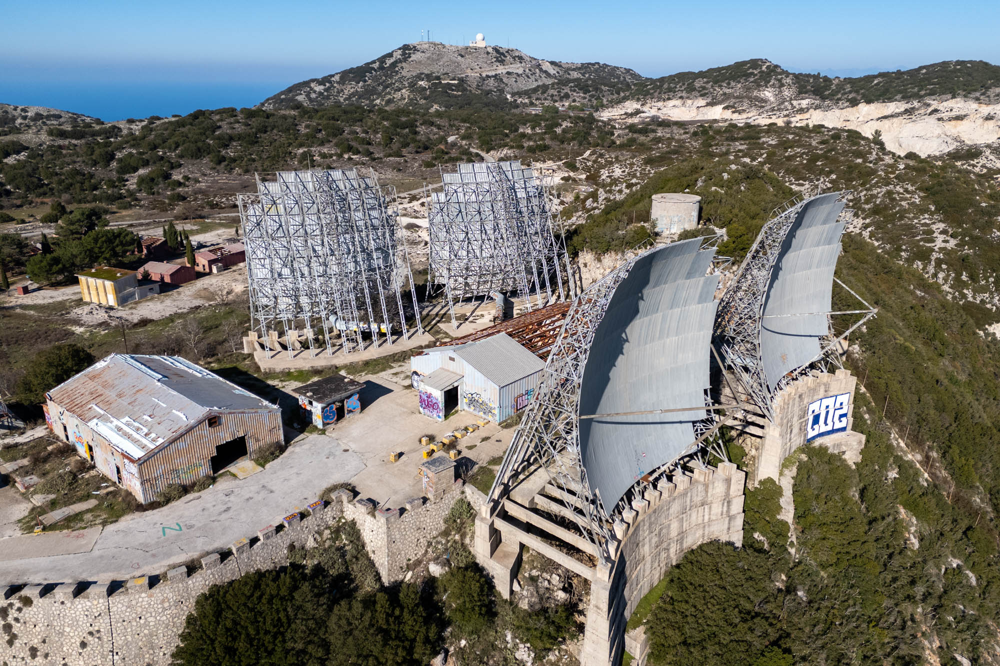
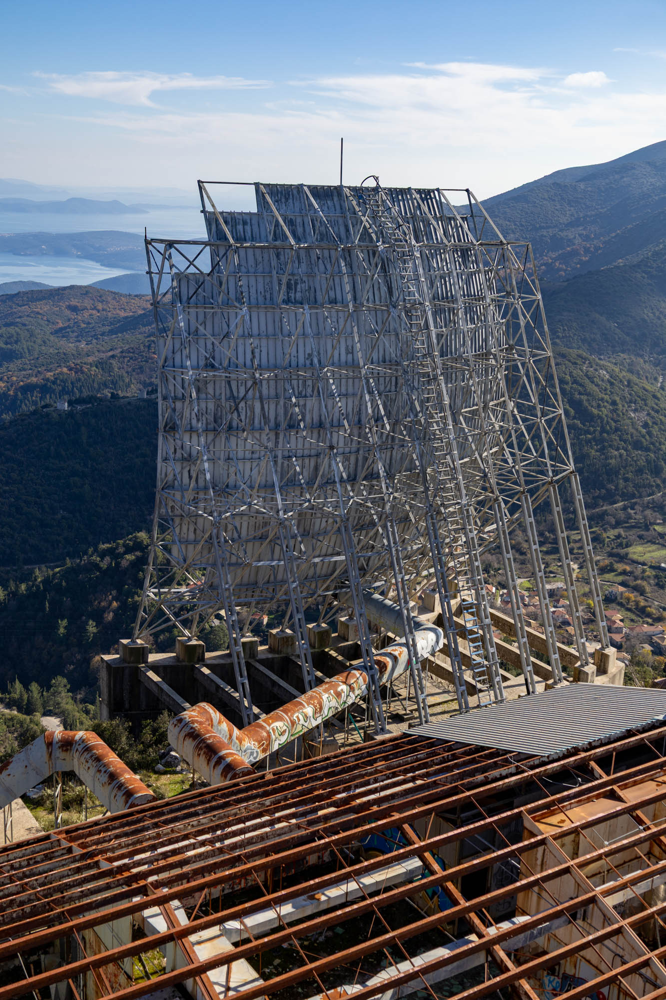

Once a vital link in the 486L MEDCOM network, this now-abandoned troposcatter communications base stands silent atop a peak in the Ionian Sea. Its massive dishes still listening for messages that will never come.

The Mediterranean Communications System (MEDCOM) was once a large network of 32 troposcatter bases covering the European Mediterranean coast, stretching from the west in Spain to the east in Turkey. Alongside NATO's ACE-High system, this U.S. Air Force system was used to transmit encrypted messages between NATO allies during the Cold War.

At its peak, this base was staffed by around 45 people from America and Greece: soldiers, technicians, mechanics, and support staff. While it was previously well-guarded, now faded signs and open gates welcome you onto the base's grounds. If you can find it and make it up the mountain, it is very easy to explore. On this sunny autumn day, I had the whole place to myself.


After the base's closure, shortly after the fall of the Berlin Wall, it was handed over from NATO to the Hellenic Air Force and then to the local municipality. According to what I was able to find online, shortly after the final handover the base was looted by locals and scrappers due to much lower security.
Today, everything of value—such as electronics and copper—is long gone. Someone seems to have even taken the roof off the above building. What remains is slowly rusting or being covered in graffiti.

This base, often referred to by its code name 14B, previously had two secured areas: the communication station and the soldiers' camp. During my visit, I was only able to visit the communication station, since a local has reclaimed the camp for housing and animal storage. You can just see the camp's red buildings in the top-left corner of the above photo.


The above two dishes point towards mainland Greece, to another MEDCOM base over 250 kilometres away. The two dishes on the other side of the base point towards a MEDCOM base in Italy, over 360 kilometres away. Both sets act as a bridge between allies, and from past communications technology to modern decay.
